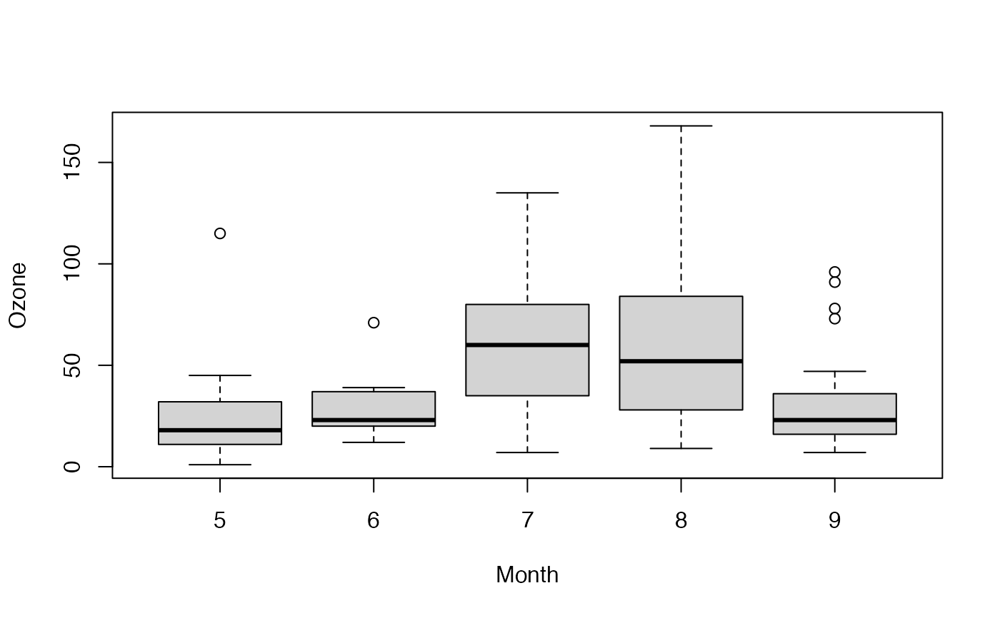

DunnettTest.RdPerforms Dunnett's test for comparing several treatments with a control.
DunnettTest(x, ...) # S3 method for default DunnettTest(x, g, control = NULL, conf.level = 0.95, ...) # S3 method for formula DunnettTest(formula, data, subset, na.action, ...)
| x | a numeric vector of data values, or a list of numeric data vectors. |
|---|---|
| g | a vector or factor object giving the group for the
corresponding elements of |
| control | the level of the control group against which the others should be tested. If there are multiple levels the calculation will be performed for every one. |
| conf.level | confidence level of the interval. |
| formula | a formula of the form |
| data | an optional matrix or data frame (or similar: see
|
| subset | an optional vector specifying a subset of observations to be used. |
| na.action | a function which indicates what should happen when
the data contain |
| ... | further arguments to be passed to or from methods. |
DunnettTest does the post hoc pairwise multiple comparisons procedure.
If x is a list, its elements are taken as the samples to be
compared, and hence have to be numeric data vectors. In this case,
g is ignored, and one can simply use DunnettTest(x)
to perform the test. If the samples are not yet contained in a
list, use DunnettTest(list(x, ...)).
Otherwise, x must be a numeric data vector, and g must
be a vector or factor object of the same length as x giving
the group for the corresponding elements of x.
A list of class c("PostHocTest"), containing one matrix named after the control with columns diff giving the difference in the observed means, lwr.ci giving the lower end point of the interval, upr.ci giving the upper end point and pval giving the p-value after adjustment for the multiple comparisons.
There are print and plot methods for class "PostHocTest". The plot method does not accept xlab, ylab or main arguments and creates its own values for each plot.
Andri Signorell <andri@signorell.net>, the interface is based on R-Core code
Dunnett C. W. (1955) A multiple comparison procedure for comparing several treatments with a control, Journal of the American Statistical Association, 50:1096-1121.
## Hollander & Wolfe (1973), 116. ## Mucociliary efficiency from the rate of removal of dust in normal ## subjects, subjects with obstructive airway disease, and subjects ## with asbestosis. x <- c(2.9, 3.0, 2.5, 2.6, 3.2) # normal subjects y <- c(3.8, 2.7, 4.0, 2.4) # with obstructive airway disease z <- c(2.8, 3.4, 3.7, 2.2, 2.0) # with asbestosis DunnettTest(list(x, y, z))#> #> Dunnett's test for comparing several treatments with a control : #> 95% family-wise confidence level #> #> $`1` #> diff lwr.ci upr.ci pval #> 2-1 0.385 -0.6901497 1.4601497 0.5832 #> 3-1 -0.020 -1.0336608 0.9936608 0.9982 #> #> --- #> Signif. codes: 0 '***' 0.001 '**' 0.01 '*' 0.05 '.' 0.1 ' ' 1 #>## Equivalently, x <- c(x, y, z) g <- factor(rep(1:3, c(5, 4, 5)), labels = c("Normal subjects", "Subjects with obstructive airway disease", "Subjects with asbestosis")) DunnettTest(x, g)#> #> Dunnett's test for comparing several treatments with a control : #> 95% family-wise confidence level #> #> $`Normal subjects` #> diff lwr.ci #> Subjects with obstructive airway disease-Normal subjects 0.385 -0.6901497 #> Subjects with asbestosis-Normal subjects -0.020 -1.0336608 #> upr.ci pval #> Subjects with obstructive airway disease-Normal subjects 1.4601497 0.5832 #> Subjects with asbestosis-Normal subjects 0.9936608 0.9982 #> #> --- #> Signif. codes: 0 '***' 0.001 '**' 0.01 '*' 0.05 '.' 0.1 ' ' 1 #>DunnettTest(Ozone ~ Month, data = airquality)#> #> Dunnett's test for comparing several treatments with a control : #> 95% family-wise confidence level #> #> $`5` #> diff lwr.ci upr.ci pval #> 6-5 5.829060 -22.43792 34.09604 0.96467 #> 7-5 35.500000 15.22870 55.77130 0.00011 *** #> 8-5 36.346154 16.07486 56.61745 0.000097 *** #> 9-5 7.832891 -11.90719 27.57297 0.73506 #> #> --- #> Signif. codes: 0 '***' 0.001 '**' 0.01 '*' 0.05 '.' 0.1 ' ' 1 #>DunnettTest(Ozone ~ Month, data = airquality, control="8", conf.level=0.9)#> #> Dunnett's test for comparing several treatments with a control : #> 90% family-wise confidence level #> #> $`8` #> diff lwr.ci upr.ci pval #> 5-8 -36.3461538 -54.26925 -18.423062 0.000075 *** #> 6-8 -30.5170940 -55.50965 -5.524537 0.0298 * #> 7-8 -0.8461538 -18.76925 17.076938 0.9999 #> 9-8 -28.5132626 -45.96667 -11.059853 0.0019 ** #> #> --- #> Signif. codes: 0 '***' 0.001 '**' 0.01 '*' 0.05 '.' 0.1 ' ' 1 #>